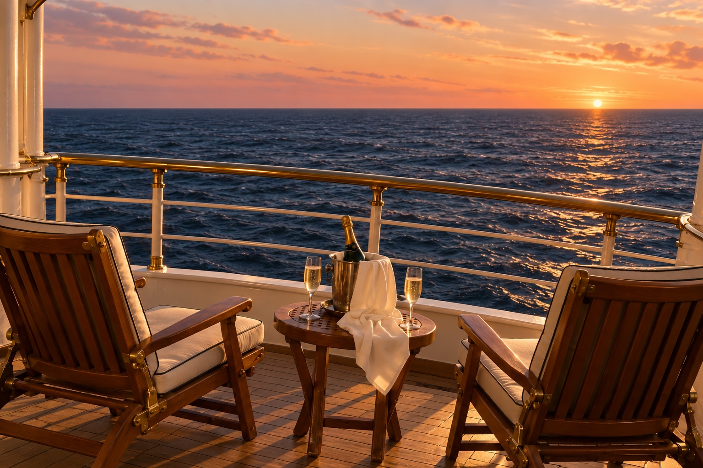

01 / UPPER MID-DECKPT
Portugal
Good light. Reasonable wine. Increasingly crowded with passengers who have also noticed the problem.
- Balcony quality
- Excellent
- Titanification
- With lunch breaks
THE VOYAGE OF A LIFETIME. TECHNICALLY.
A discerning passenger's guide to making the most of the remaining voyage.
Find a better cabinNo guarantees regarding buoyancy.
Reports of a slight list have been reclassified as a new perspective.
BEVERAGE SERVICE CONTINUESACCOMMODATION, UNTIL FURTHER NOTICE
Water does not enter every
compartment simultaneously.
Good light. Reasonable wine. Increasingly crowded with passengers who have also noticed the problem.
Politically boring, by popular request. Far from the engine room. Someone is grilling something.
Impeccable linens. Crew appears competent. Your invoice will arrive before the water does.
Lovely views. Far from the shouting. Unfortunately, distance from the bridge does not constitute another ship.
Excellent minibar. Passengers increasingly fighting over who gets to steer. The gift shop is enormous.
The lifeboat paperwork is complicated. The espresso is not. Lunch remains a perfectly good reason to be here.
An enormous cabin. The occupants still want the one next door. The neighbours have moved a wardrobe against the connecting door.
Excellent breakfast. Vigorous debate about the seating plan. Passengers can locate the emergency exits with their eyes closed.
Cabin classifications are entirely satirical. Remaining normality: unavailable.
THE ONBOARD PROGRAMME
You might as well enjoy the music.
FORMAL ATTIRE OPTIONAL.The tasting menu does not require a five-year plan.
While it remains a separate body of water.
The floor is doing some of the work.
If only to complain about the ship in another language.
Some passengers are more reassuring than the announcements.
OFFICIAL COMMUNICATIONS
REGARDING THE ENGINE ROOM
Management acknowledges reports of smoke from the engine room. Beverage service remains unaffected.
Passengers are reminded that the word “unsinkable” was used in an aspirational capacity.
Warm regards,
The Management
Wrong website.
Safe is no longer an available cabin class. May we interest you in a sea view?
Possibly. The carpet in your current cabin appears to be making a noise.
No. We offer neither relocation nor flotation. This is a joke with unusually good linens.
YOUR COMFORT REMAINS OUR PRIORITY